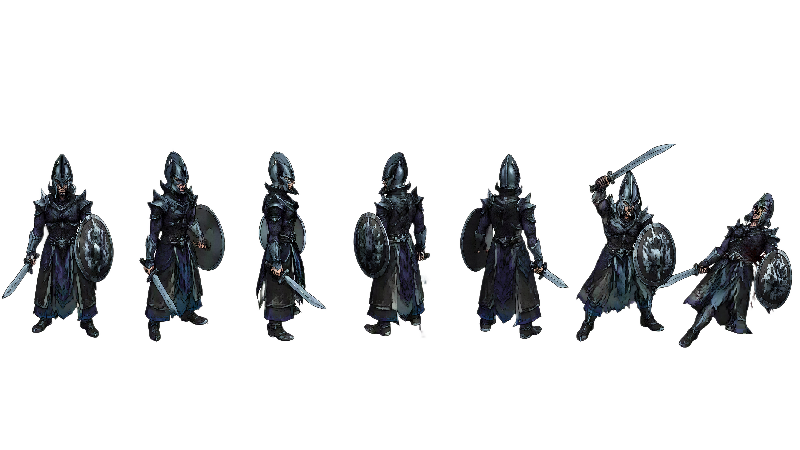

Banc d'essai pour vérifier les deux feuilles de sprites (marche / mort) avant intégration dans test-combat.html.
Chaque feuille est une grille fixe 6 colonnes × 4 lignes, cellules de 640×540 px. Les colonnes semblent être
6 orientations du personnage ; je n'ai pas de certitude sur la correspondance exacte avec les 6/8 directions de la grille
isométrique du jeu — utilise le panneau « Repère des orientations » plus bas pour me dire laquelle est laquelle,
et je câblerai ça proprement ensuite.
L'unité fait des allers-retours en marchant (profil), puis meurt sur commande. Sert à juger l'échelle, le rythme de la marche et l'enchaînement marche→mort une fois posé sur un vrai fond.
Planche de référence livrée avec les sprites — sert à identifier quelle colonne correspond à quelle orientation.

Contrôle brut : les 24 cellules (6×4) de dark_elf_walk_cycle_02.png, sans retouche, pour repérer tout décalage de découpe.
Idem pour dark_elf_death_cycle_02.png. La ligne 4 (bas) est la pose finale au sol.
Note technique : les deux fichiers sources pèsent ~8-9 Mo chacun (3840×2160). Très bien pour ce banc d'essai local, mais avant de les brancher sur la carte de bataille réelle (des dizaines d'unités visibles), il faudra les redimensionner / compresser — je peux le faire dès que le découpage et le mapping de direction sont validés ici.